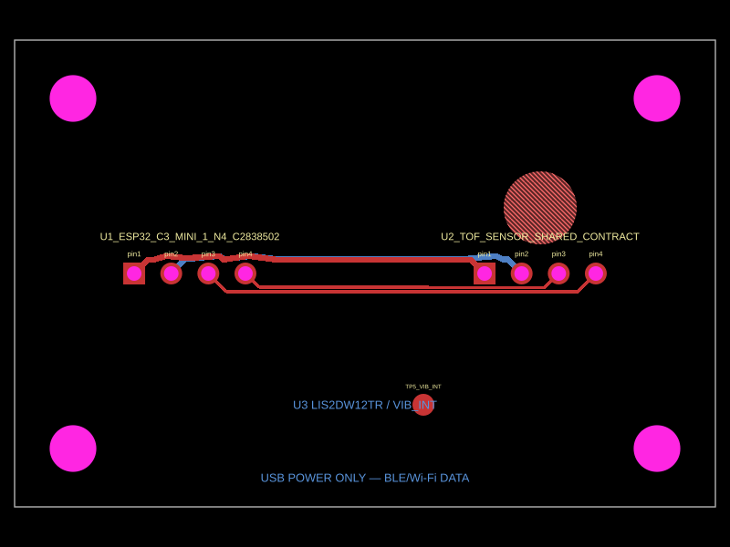

Status: provisional, not a 1:1 fit approval. The supplied photos have no ruler/caliper reference. The generated PCB render is shown for orientation and review questions only; final footprints require measured coordinates.


| Check | Status | Required closure evidence |
|---|---|---|
| Module outlines | candidate | Measure received board envelopes and replace provisional silkscreen rectangles |
| Pad count and edge placement | candidate | Confirm four lower-edge pads plus X/e opposite-edge pads with caliper and continuity map |
| X/e function | unresolved / NC | Trace continuity or module schematic before any connection |
| USB-C / BOOTSEL access | candidate | Measured overlay after module placement |
| Optical opening and cleanable path | candidate | Downward installed view and keep-out review |
| Mounting and cable-load clearance | candidate | Enclosure/desk mounting context plus mechanical review |